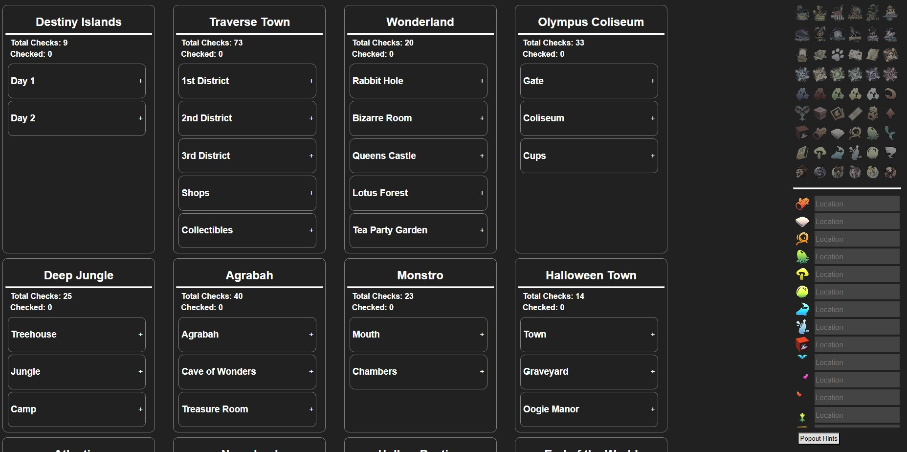
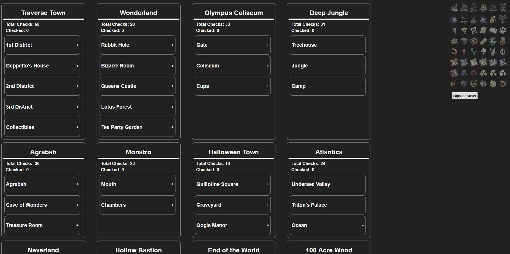

KH1 Randomizer Checklists
Two checklists/trackers for KH1:
- One for Denhonator's Randomizer
- One for Archipelago Randomizer
KH1 Rando Checklist
Features
- Checklist for each world in KH1 Randomizer (Denhonator's version)
- Collapsable sections for each world
- Sections are crossed out when all checks are done
- Color coded checks to signify Trinity requirements, Torn Pages, and Magic checks.
- Info bubble next to checks to show logical requirements
- Item tracker with important checks
- Hints tracker with location suggestions
- Ability to popout hints tracker
KH1 AP Rando Checklist
Features
- Checklist for each world in KH1 Randomizer (Archipelago version)
- Collapsable sections for each world
- Sections are crossed out when all checks are done
- Color coded checks to signify Trinity requirements
- Info bubble next to checks to show logical requirements
- Item tracker with important checks
- Scroll wheel functionality to increment/decrement items on tracker
- Ability to popout item tracker
Future Work
- Item tracker and checklist interact with each other by making logically obtainable checks visible.